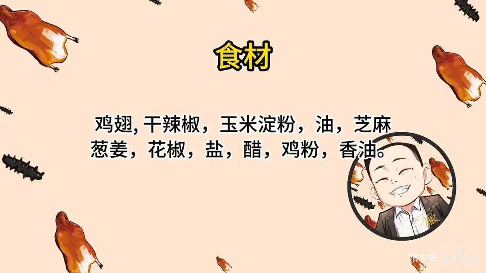
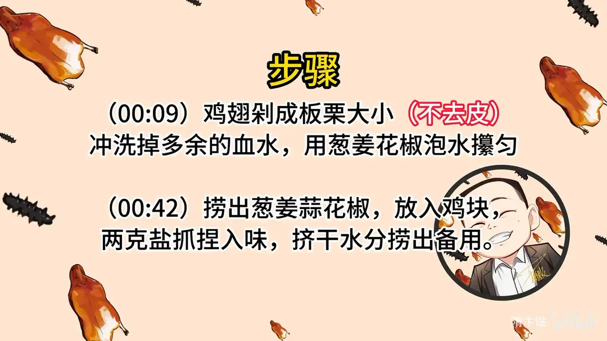
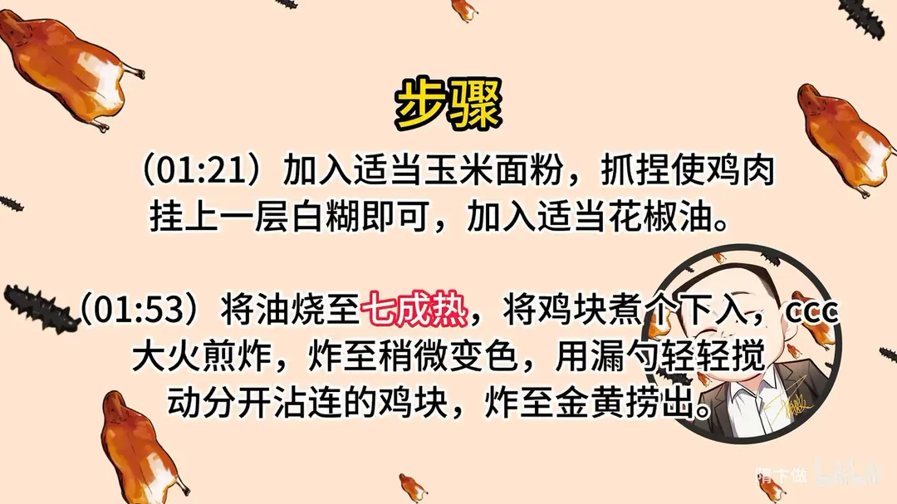
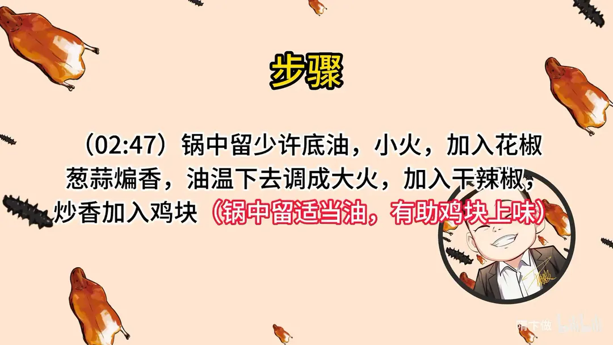
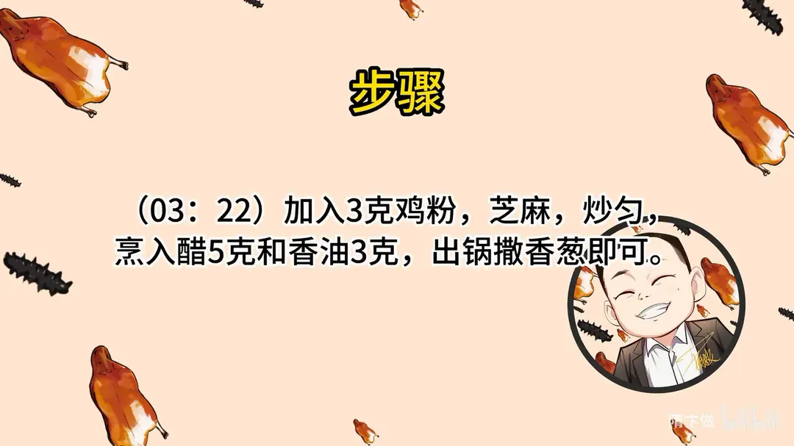

辣子鸡
隋卞一做。鸡翅不去皮剁成板栗大小的块，葱姜花椒水攥匀去腥，2g 盐抓入味后挂玉米淀粉白糊、拌花椒油。七成油温大火炸至金黄，再小火煸香花椒葱蒜、大火下干辣椒，最后 3g 鸡粉、5g 醋、3g 香油收味。
原视频：https://www.bilibili.com/video/BV1Y14y1y7Xn
食材
鸡翅、干辣椒、玉米淀粉 等 12 样
| 类别 | 用料 | 用量 |
|---|---|---|
| 主料 | 鸡翅 | 适量 |
| 主料 | 干辣椒 | 适量 |
| 配料 | 玉米淀粉 | 适量 |
| 配料 | 芝麻 | 适量 |
| 配料 | 葱姜 | 适量 |
| 配料 | 花椒 | 适量 |
| 调料 | 油 | 适量 |
| 调料 | 盐 | 2g |
| 调料 | 花椒油 | 适量 |
| 调料 | 醋 | 5g |
| 调料 | 鸡粉 | 3g |
| 调料 | 香油 | 3g |
步骤
- 剁块去腥：鸡翅剁成板栗大小，不去皮；冲洗掉多余的血水，用葱姜花椒泡水攥匀。
- 抓盐入味：捞出葱姜蒜花椒，放入鸡块，加 2g 盐抓捏入味，挤干水分捞出备用。
- 挂糊：加入适量玉米淀粉，抓捏使鸡肉挂上一层白糊即可，再加入适量花椒油拌匀。
- 炸鸡块：油烧至七成热，鸡块逐个下入，大火煎炸；炸至稍微变色时用漏勺轻轻搅动，把粘连的鸡块分开，炸至金黄捞出。
- 煸香料：锅中留少许底油，小火下花椒、葱蒜煸香；油温降下去后调成大火，加入干辣椒炒香，再下鸡块翻炒。锅中适当留油，有助鸡块上味。
- 收味出锅：加入 3g 鸡粉和芝麻炒匀，烹入 5g 醋、3g 香油，出锅撒香葱即可。
小贴士
- 鸡翅不去皮，炸出来更香、口感更糯。
- 炸鸡块要逐个下锅，先定型再搅动，避免粘连和脱糊。
讲解要点
难度：★★☆☆☆（新手可做，难点是炸制火候和辣椒油量）
为什么这么做
- 鸡皮不能去：鸡皮是香气和酥脆口感的主要来源，去掉皮的辣子鸡不香。
- 剁块后要洗血水：鸡块骨缝里的血炸后会发黑、发苦，洗到水清再腌。
- 只挂薄薄一层玉米淀粉：粉厚会炸得又干又硬；薄粉在高温下迅速结壳，既脆又能锁住水分。
- 腌时拌花椒油：花椒油会在炸制时渗进肉里，这样才「里外麻辣咸香」，而不是只有表面有味。
- 全程大火、不低温久炸：高温让表面瞬间结壳，油进不去，所以不用复炸两三次。
- 炒辣椒要舍得放油：油是辣味和鸡块之间的媒介，油少了鸡块挂不上味。
- 关火放鸡粉、最后烹醋香油：鸡粉化得快、咸鲜足；醋和香油在出锅前烹入，香气最足。
容易翻车
- 鸡块剁成板栗大小，太小容易炸干，太大不易入味。
- 刚下锅别急着搅，等表面变色再用漏勺拨散，避免脱糊、粘连。
- 煸花椒、葱蒜时先小火，油温降下来再转大火下辣椒，火大易糊。
- 炒辣椒阶段锅底要能看到油「汪」着，太干就补油。
热评补充
- 辣椒建议两种搭配：增香款（河南子弹头、贵州子弹头、四川二荆条、贵州灯笼椒、丘北椒）+ 增辣款（七星椒、河南新一代、石柱红），香辣兼顾；不太能吃辣就少放增辣款。
原片尾卡





原片文案
AI 字幕校准稿
辣子鸡在家怎么做才能做好吃？今天详细给你来一遍。首先要选鸡，鸡翅就可以了。有的师傅做辣子鸡会把鸡皮去掉，其实那是不能去的，没有这层皮就不好吃了。鸡翅上那块瘦肉说实话不是很好吃，但也不浪费，一起切进去。
剁成板栗大小就行。带骨头的地方直接剁，中间不用改刀。怕麻烦的话，买鸡翅时让摊主直接剁好，告诉他要多大块。剁完的鸡块骨头中间会有血，炸完是黑的，所以要稍微洗一下。
准备点葱姜花椒水，用手攥匀，把味释放出来之后过滤一下，葱姜就不要了——鸡块小，都扔进去不好挑，只用水就行。加上 2 克盐抓捏，让里边的肉进味。我们在外面吃辣子鸡，有时越嚼越没味、越嚼里面腥味越大，就是少了这一步。抓完盐的水还是有血水，血水不干净炸出来鸡块是黑的，所以这步不能省，要控一下水。
表面少抓一点玉米淀粉，不抓淀粉炸出来特别干；薄薄一层就行，表面能看到白、不见鸡肉，就这点粉够了。还要加一样，来一点花椒油。放盐、放葱姜，是去腥增香入底味的作用；花椒油在炸制的时候会渗进肉里去，所以吃的时候里外都是麻辣咸香的味道。这一步很关键。配菜的活就完了。
现在下锅炸。锅里倒点油，烧到七成热，下鸡块，一直大火炸就行。刚下锅不用着急动，等鸡块表面稍微变色了，拿勺子动一动，让它一个个分开。你看这点淀粉就起作用了，下去时间不长，表面就有一层薄薄的硬壳。油花哗啦哗啦特别大，说明里边水分还多，所以要稍微再炸一会儿。炸到这个颜色就可以了。有的师傅说复炸两次三次，像这种高温炸就行，只要不低温炸、不浸泡着炸，它就进不了多少油，明白这个道理就行。
把油倒出去，锅里留点底油，下花椒、下蒜，这时候小火，火大了就糊。看油温下去之后再转大火，一定要把花椒煸香，然后把干辣椒倒进去。不能不舍得放油，油是吃辣味和鸡块之间的媒介，锅底一定要有这么多油；油放太少，鸡块沾不上那个味道。这时中火，让炸过辣椒花椒的油全都附着到鸡块上就可以了。不要太着急。
这时候把火关了，放点鸡粉——鸡粉化得快，里边的咸味、鲜味都够。再放芝麻，开火。火一定要控制好，火太大辣椒炒出来就糊了。出锅烹点醋和香油。
成品连骨头都酥了，又麻又辣，里外都有味。选小鸡的鸡翅就行。这个方法不敢说是最正宗，但这是一个家庭通用的做法，在家照着做不会难吃。